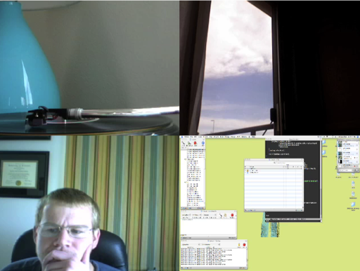

Using Gawker to Combine Cameras
Gawker can take multiple cameras and combine them together to create a side-by-side timelapse movie. Take your camera and combine it with your friend's or combine two remote cameras to show two remote locations changing over time.
To create a Combined Camera:
- Have the cameras you want to combine enabled in your camera list.
- Select them by clicking on the first, then Apple-Clicking on the rest. The cameras you want to combine should now be selected.
- In the Gear or Camera Menu, select "Combine."
- You should now have a Combined Camera in your camera list.
You should now have a Combined Camera in your camera list. A Combined Camera acts just like any other camera; you can enable and disable it, open it, record it. If you decide you don't want that camera, you can select "Remove Camera" from the Gear or Camera Menu. In order for a Combined Camera to work, the cameras it is combining need to remain enabled.

Have fun!
See also
Gawker Basics
Using Gawker to Record a Movie
Camera Options in Gawker
Using Gawker to Share your Camera